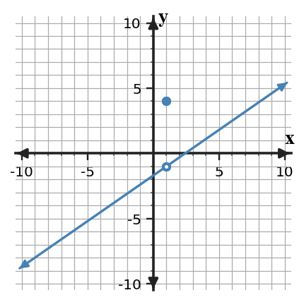

Find Someone Who — Set 1 — Section 1.1: What Is a Limit?
Current - Section 1.1: What Is a Limit?
1. Complete the task and name the strategy or representation that makes your answer defensible. From the graph, estimate $\lim_{x\to 1}f(x)$ and compare it with $f(1)$.

Graph of f.
2. Complete the task and name the strategy or representation that makes your answer defensible. For $f(x)=x^2$, write the secant-slope expression between $x=1$ and $x=1+h$.
3. Complete the task and name the strategy or representation that makes your answer defensible. Secant slopes for intervals ending at $x=2$ are listed. Estimate the instantaneous slope as the interval shrinks.
interval width
1
0.5
0.1
0.01
secant slope
7
6
5.2
5.02
4. Complete the task and name the strategy or representation that makes your answer defensible. Explain the difference between the statements $f(1)=6$ and $\lim_{x\to 1}f(x)=6$.
5. Complete the task and name the strategy or representation that makes your answer defensible. Does the numerical evidence support the claim $\lim_{x\to 4}h(x)=4$? Give one sentence of evidence.
x
3.5
3.9
3.99
4.01
4.1
4.5
h(x)
4.5
4.1
4.01
4.01
4.1
4.5
Last Learning
6. Complete the task and name the strategy or representation that makes your answer defensible. Factor completely: $x^2-9x+14$.
7. Complete the task and name the strategy or representation that makes your answer defensible. For $f(x)=3x^2+3x+3$, find $f(2)$.
8. Complete the task and name the strategy or representation that makes your answer defensible. Evaluate $\log_{3}(9)$.
9. Complete the task and name the strategy or representation that makes your answer defensible. Solve $2x-6=7$.
10. Complete the task and name the strategy or representation that makes your answer defensible. Find the average rate of change of $p(x)=2x^2+0x$ on $[-1,4]$.
Mastery Spiral
11. Complete the task and name the strategy or representation that makes your answer defensible. Rationalize and simplify $\frac{1}{\sqrt{6}+1}$.
12. Complete the task and name the strategy or representation that makes your answer defensible. Write, but do not simplify, the difference quotient $\frac{f(1+h)-f(1)}{h}$ for $f(x)=1x^2-2x$.
13. Complete the task and name the strategy or representation that makes your answer defensible. Solve the system $y=2x+9$ and $y=-3x-6$.
14. Complete the task and name the strategy or representation that makes your answer defensible. State the domain of $k(x)=\sqrt{x+3}$.
15. Complete the task and name the strategy or representation that makes your answer defensible. The table gives values of a function. Find the average rate of change from $x=1$ to $x=3$.
x
0
1
2
3
f(x)
5
6
9
14
16. Complete the task and name the strategy or representation that makes your answer defensible. A sensor reading changes from 28 units at 4 s to 58 units at 9 s. Find the average rate of change.
17. Complete the task and name the strategy or representation that makes your answer defensible. Simplify $\frac{x^4}{x^4}$ for $x\ne 0$.
18. Complete the task and name the strategy or representation that makes your answer defensible. A line passes through $(0,-1)$ and $(1,3)$. Find its slope.
19. Complete the task and name the strategy or representation that makes your answer defensible. Write, but do not simplify, the difference quotient $\frac{f(3+h)-f(3)}{h}$ for $f(x)=4x^2+4x$.
20. Complete the task and name the strategy or representation that makes your answer defensible. Write $-2\lt x\le 4$ in interval notation.